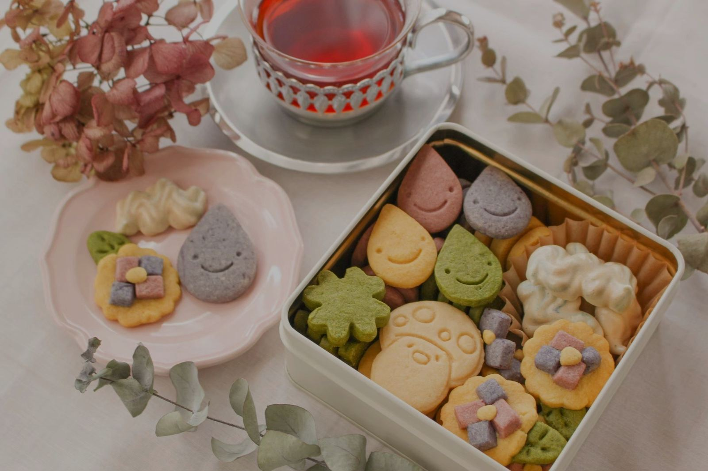
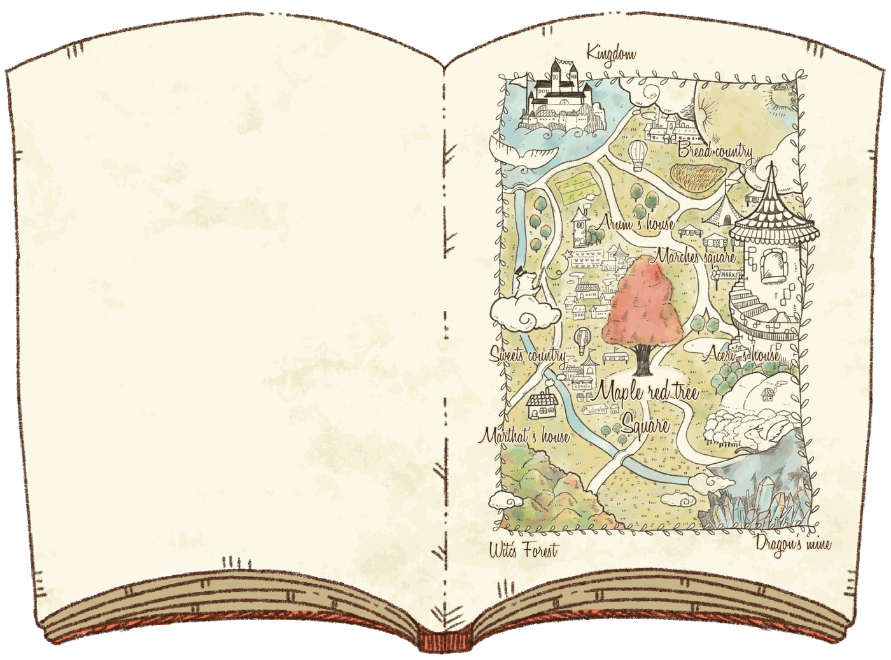
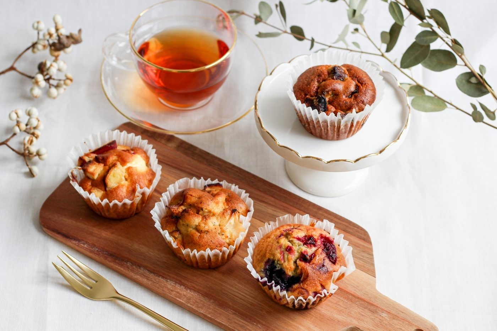

しあわせキノコのクッキー
（ミニ）
当店1番の人気クッキー！実寸大よりもミニサイズなので、3枚入り。
280円 (税込)
アチェリのおやつは、オリジナルの物語「月暈（ハロー）の物語」から 生まれた焼菓子屋です。
物語に出てくるしあわせキノコや、願い星、満月。 絵本のなかのモチーフをそのまま形にして、 見て楽しく、食べておいしいおやつにしています。
甘味は主にメープルシュガー、 小麦粉は愛知県産の「きぬあかり」を使って、 安城市の小さな工房でひとつずつ焼いています。

絵本のページをめくるように。
物語のなかから、そのまま出てきたようなおやつたち。
当店1番の人気クッキー！実寸大よりもミニサイズなので、3枚入り。
280円 (税込)

魔女の目をあざむくために作った、実寸大しあわせキノコのクッキー。
200円 (税込)

ミニサイズキノコと好物のリンゴが一緒に入ったメイプル味のクッキー。
350円 (税込)

安城市の特産物や季節の旬を使って作るキノコ型の特製マフィン。
320円 (税込)

HALOの世界のフルムーン(満月)をモチーフにした紅茶味のクッキー。
360円 (税込)

HALOの物語に登場する、願い星のクッキー。味は色々、願いも色々。
360円 (税込)
皆さん、お月さまの周りにぼんやりと輪っかができる様子を見たことがありますか？ それが月暈（つきがさ）、ハローとも呼ばれています。
天気が悪くなる、悪いことが起きる前兆と言われたりします。 でも、何か今まで出会ったことがない変化がどこかで起きていると考えるとワクワクしませんか。
この物語は、飛行機乗りの少年ピットが月暈の現れる時にだけ、 自分たちの住む世界と異世界、ハローの国を結ぶ扉をくぐり、 色々な人やモノと出会い成長していく冒険ファンタジーです。 では、物語をお話しましょう。
魔女の森、お菓子の国、ドラゴンの鉱山。 おやつはこの地図のどこかから、やってきます。

物語に登場するキャラクターの紹介は [クライアント確認]（絵本の画像をご提供いただき次第、掲載します）
季節ごとに、物語のひと場面を缶に詰めています。


価格・販売状況は [クライアント確認]

毎月、第1・3の水曜日と土曜日に。
毎月第1・3 水曜日・土曜日 13:00〜17:00 オープン
地図の掲載方法（埋め込み／静的画像）は [要記入]
毎月第1・3 水曜日・土曜日 13:00〜17:00｜愛知県安城市横山町石ナ曽根181-3
商品購入に関するお問い合わせは、InstagramまたはFacebookよりお願いいたします。